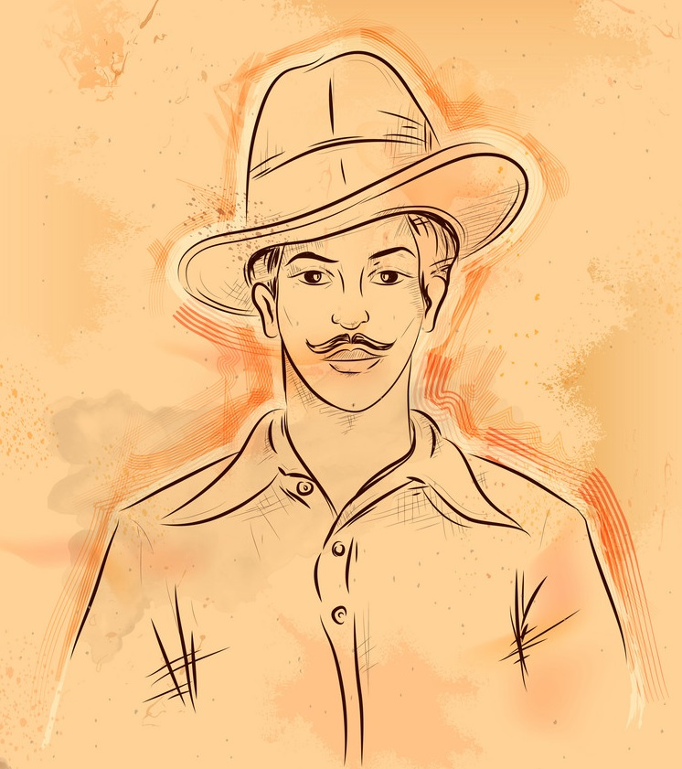

Shaheed Bhagat Singh
"Inquilab Zindabad"

"A still Shaheed Bhagat Singh Sketch"
- 1907: "Shaheed Bhagat Singh was born on September 27th ,1907. Singh was influenced by a number of incidents during his childhood which established a deep sense of attachment to the independence of India in him."
- 1919: "Bhagat Singh visited Jallianwala bagh at the age of 12. A lot of people gathered in a public meeting and they were fired upon by the British government without any warning, killing hundreds. Bhagat Singh witnessed the whole event watching the deaths of many innocent people and who were victims of discrimination."
- 1924: "He ran away from his house to Cownpore from his family to avoid getting married. It is also belived that he went to Cownpore to attempt to free kakori train robbery convicts from jail, but returned to Lahore for unknown reasons."
- 1928: "Bhagat singh took vow to take revenge of Lala Lajpat Rai's death who led a silent protest but the police responded with violence. Singh joined other revolutionaries to plot the death of James A. Scott. Scott was the superintendent of police, he ordered the police to Baton charge the protesters. The plot of killing Scott went wrong and Singh killed J.P Saunders instead."
- 1929: "He and Batukeshwar Dutt threw two bombs in Central Legislative Assembly. And were then arrested. After they were arrested, they witnessed discrimination between European and Indian prisoners. Singh led other prisoners in a hunger strike to protest this. They demanded equality in standards of food, clothing,toiletries, and other hygienic necessities."
- 1931: "Bhagat singh , Rajguru and Sukhdev were hanged on 27th March, for Lahore Conspiracy Case."